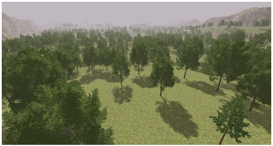
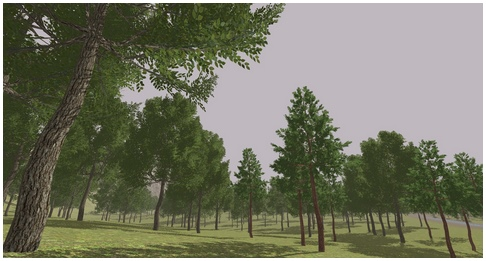
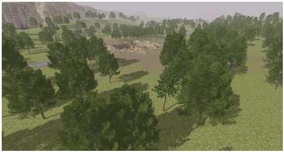

cin
I’m restore access to my repositiry of the game.

I’m restore access to my repositiry of the game.

Hey Vladimir,
I remember this project from the old google groups forum and showcase, it looks good  definitely will try this!
definitely will try this!

I remember this one too. Thanks for sharing it.

Like I probably said before, as a reverse-engineering effort this is excellent. Should also be helpful in real-world performance tuning of Urho.
EDIT: Just to be sure, what is the legal status of the Codename Outbreak assets, seeing that there are converted models in the repository? Do you have permission from the original authors to put them online?
Hmmm… some source-files is lost. I try to restore it and make compilable version of game.
I’m create new repository - link in post #1.

Looks really cool
Is it playable at the moment ?
May be. =) Player can run over level and shoot. I’m reconstruct only first level. For next level it many manual work of finding corresponding textures and texturing extracted level. I’m cannot doing this by one. No present any type of AI (bots and so on).
Video in first post added.

Thanks for posting this! This was really great to look at to study and learn more about URHO 3D! You made a really great job with the all the sounds!
I was able to load your first level in the URHO editor and saw how you managed to have walk sound changed by walking on a specific object using custom defined variables for nodes!
Time to show my current work. I try to recreate first level of remake from zero - all models created by me. Trees generated in ngPlant. Trees: 5 levels of detail, last level - very simple cross planes with texture.
Terrain modelled manually. Triplanar texturing. Size of level: 500x1000 meters.
~2 million triangles in frame.
This is not final picture of scene. Some things is missing - stones, damaged trees, bushes and some buildings. Work in progress.
 

Simply awesome
Hey, getting better! really nice work
Very nice “last gen-AAA” (or how I should say that) look.
Could you tell me how you managed to access the files in CO directory? I’ve been trying everything to rip the models from the game and bring them into Blender but nothing works… is there an SDK or an unpacker for this?
There is no license information on bitbucket. I’m wondering if assets are creative-commons (CC) license and can be used for an open source demo?

I think assets from original game and not free
OK, thx. – 20 chars
Thanks to share code… God Bless You …
Thank you for this. I want to learn from this, as I’m looking for an example of how to structure a big program with multiple source files.
But may someone please give me instructions to compile for Linux? I didn’t manage to get it to work.
sources is very old and require many changes for compiling with current version of engine

By ‘Last gen’ you mean diffuse + normal + specular?
Maybe @cin could try PBR workflow to make everything current gen if the target platform is not mobile. Though it even takes more time and hard to create the physically based art assets.
{kind=link}
{kind=link}
{kind=link}
{kind=link}
{kind=link}
{kind=link}